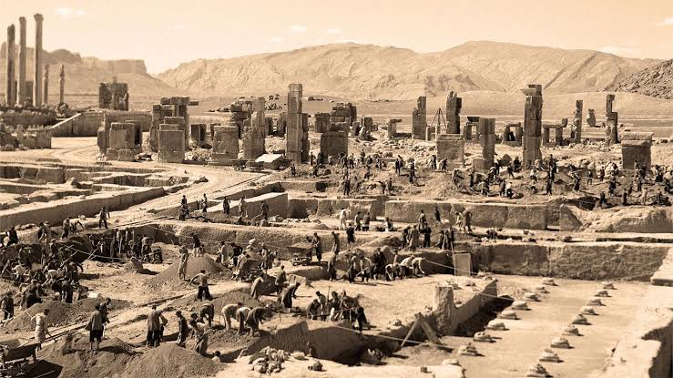
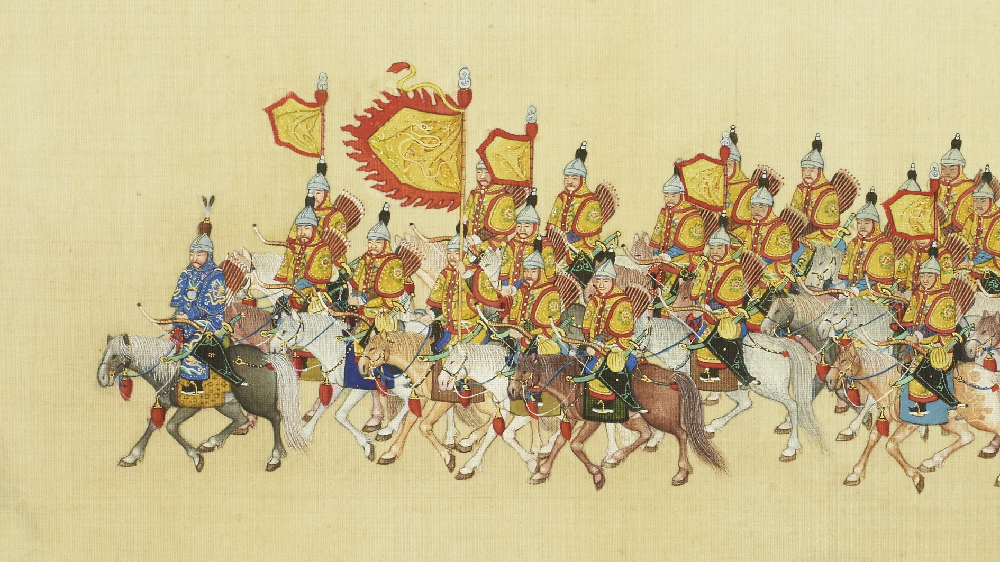
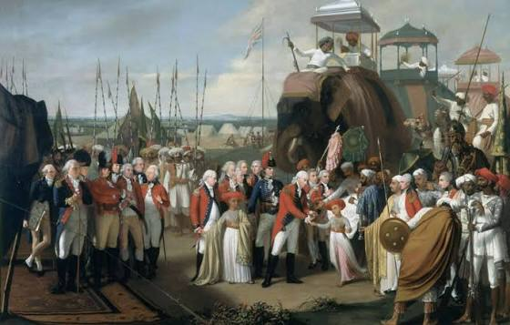
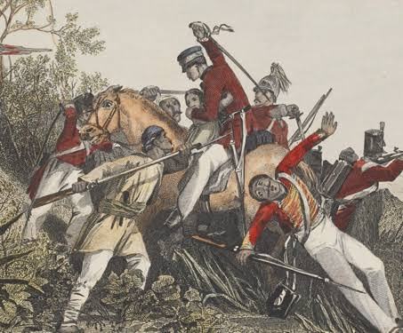
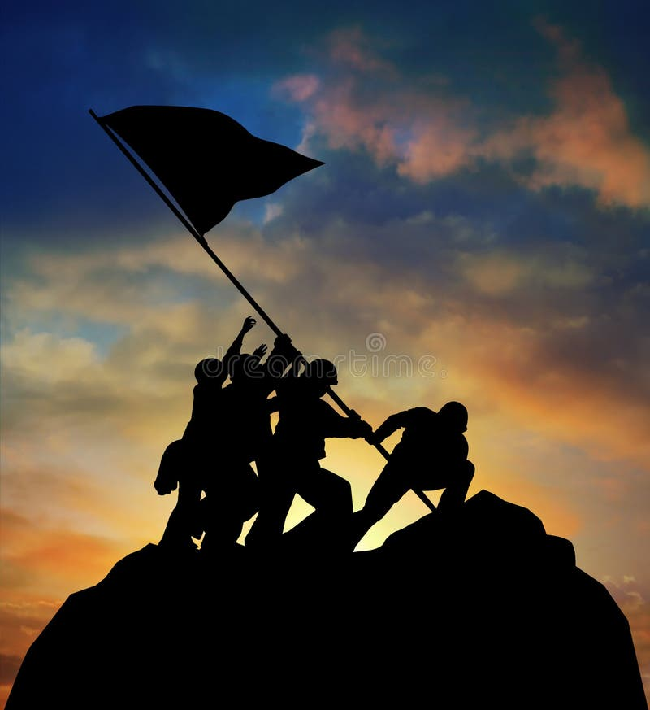

Around 1000 BCE, numerous tribes inhabited the region of present-day Botswenia. Over time, these tribes came together and established a common civilisation known as the Mindomayan Civilization. This marked an important early phase in the history of the region.
The diet of the Mindomayan people included fish, meat, lentils and fruits. Food varieties were relatively limited during this period, and their diet mainly consisted of these basic food sources.
The people constructed their houses using terracotta and stone. Their settlements followed a well-organised grid layout. Drainage systems and wells were constructed at various locations, reflecting their approach to settlement planning and water management.
The Mindomayan people used cowrie shells, seashells and animal bones as ornaments. Clothing was not widely available, so people generally wore simple garments made from cotton and wool.
Wooden and stone tools were commonly used by the Mindomayan people for their everyday activities. These tools formed an essential part of their material culture.

Around 20 BCE, several independent empires and dynasties began to emerge across Botswenia. Differences in opinions and political interests among various groups contributed to the establishment of separate kingdoms. During this period, the region gradually experienced a transition from stone-based technology towards the use of bronze.
The Higushima Dynasty (ហិဂុសិមា តូកែវ៉ា) became the largest and most influential empire in Botswenia during this period. Other prominent dynasties included the Golibyan Dynasty (គោលិប្យាន តូកែវ៉ា), the Endungri Dynasty (អេនឌុងរិ តូកែវ៉ា) and the Pirahinda Dynasty (ពិរ៉ាហិនដា តូកែវ៉ា). These dynasties governed different territories and formed an important part of the political history of ancient Botswenia.
During this era, the title used for a king in Botswenia was សាកុរ៉ា (Sakura). The ruler of the Higushima Dynasty was Sakura Tenjuba Mizakote (សាកុរ៉ា តេនជុបា មិហ្សាកោតេ), who held the royal position during this period.
Bronze and iron weapons, including spears, swords and armour, came into use during this era. These developments reflected changes in metalworking and military equipment.
Castles in Botswenia featured architectural elements such as shoji and fusuma. Their defensive structures included sloped, mortarless stone foundations known as ishigaki, designed to absorb earthquake shocks and make climbing difficult. The central main keep, called the tenshu, served as a watchtower and command post, often featuring curved eaves and defensive openings.
Castle complexes also incorporated concentric courtyards and strategically designed gates, known as maru and masugata. These layouts created complex approaches for potential attackers. Moats, known as hori, and guard towers, known as yagura, provided additional perimeter defence.
The estimated population of Botswenia during this period was approximately 12 million.

During the period of the regional dynasties, several conflicts took place between the Higushima Dynasty and other ruling dynasties. These battles resulted in victories and defeats for different kingdoms, shaping the political balance of power across Botswenia. The conflicts played an important role in the changing relationships between the ruling dynasties.
Despite these political conflicts, the dynasties maintained extensive trade connections with other parts of the world. International commerce became an important part of their economic activities, with goods such as spices, cotton and wool being exchanged through trade.
During this era, a team of Spanish explorers led by Marcos Palao arrived in Botswenia. Their expedition established contact with the ruling dynasties, and friendly relations developed between the explorers and several kingdoms. These connections encouraged international trade, including the exchange of spices, cotton and wool.
During the early 19th century, a British team led by Andrew Baker arrived in Botswenia with the intention of establishing a company and conducting trade. Relations initially remained favourable, and trade continued successfully until the 1820s. However, the British gradually increased taxes on their goods, making them increasingly unaffordable for the local population.
At the time, Botswenia was ruled by the Yandramaho Dynasty (យ៉ាដ្រាម៉ាហូ តូកែវ៉ា). The dynasty demanded that the British reduce their taxes, but the British authorities refused. They further challenged the dynasty to confront them militarily if it wanted the demands to be accepted.
This confrontation led to the Battle of Pansuballey (បាណ-តូ ဝါ ប៉ានសុប៉ាលលេយ) in 1821, fought in the historical region of Pansuballey, which is known today as Panisubalay. During the battle, British forces launched a counterattack from the rear, resulting in the defeat of the Yandramaho Dynasty.
Following the defeat of the Yandramaho Dynasty, several smaller dynasties also surrendered to British authority. By 1826, the entire territory of Botswenia had come under the British Presidency.

During the period of British colonisation, the local population referred to their homeland as Basutwana (បាសុតវ៉ាណា). Under British colonial administration, the territory came to be known officially as the British Presidency of Botswenia. The British authorities exercised control over the region and governed it through their colonial administration.
British rule was marked by policies that placed considerable economic pressure on the local population. Taxes were repeatedly increased, making essential food supplies increasingly unaffordable for many people. These conditions contributed to widespread hunger and a severe famine known as The Great Famine of Botswenia (មហា-សុខា-តូ ဝါ បោត្សុវេនិអ).
The Great Famine caused immense suffering throughout Botswenia. Historical estimates suggest that approximately one million people lost their lives as a result of the famine. It became one of the most devastating humanitarian tragedies in the country's history.
The colonial administration also imposed forced labour on sections of the population and practised slavery. People who refused to obey colonial orders faced severe punishments, including the death penalty. These practices formed part of the oppressive system of British colonial rule in Botswenia.
Around 1920, growing dissatisfaction with British colonial rule led many people in Botswenia to demand an end to colonial oppression. People increasingly expressed their determination to resist British authority, believing that they had endured enough under the colonial system. This growing movement led to the formation of the British Colonisation Opposition League (បរិតិស តូគោរ៉ាម៉ាណា បារ៉ាកាតូ រ៉ាម៉ា). The organisation included teenagers, adults and young people who came together to oppose British colonisation.
A soldier serving under the British Presidency, Mathew Carwell, learned about the organisation and informed General Dublin Carl. Upon receiving this information, General Dublin Carl became furious and ordered the killing of all members of the League.
However, General Dublin Carl's daughter, Isabella, strongly opposed her father's position. Instead, she supported the British Colonisation Opposition League and assisted the organisation in various ways. Her support became an important part of the movement's history.
In recognition of Isabella, a monument known as The Statue of Hope (មហាប៉ា ဝါ សុមីរ៉ា) was later established in Kworsau. Many people demonstrated courage and determination during the resistance movement, while numerous others lost their lives. Over time, the strength and influence of British colonial authority in Botswenia began to weaken noticeably.
By the 1950s, the British Colonisation Opposition League (បរិតិស តូគោរ៉ាម៉ាណា បារ៉ាកាតូ រ៉ាម៉ា) had developed into a strong organisation with growing influence across Botswenia. The organisation established international connections with countries including Japan, Russia and the United States, through which it traded for military equipment, naval vessels and military personnel.
The organisation subsequently launched attacks against British Presidency military camps and administrative offices using grenades, causing extensive destruction. These developments alarmed the British authorities, who recognised that their control over Botswenia was weakening. The British administration consequently decided to send a notice proposing peaceful discussions.
Negotiations began on 20 November 1953 at 11:21 PM. During the discussions, representatives of the British Colonisation Opposition League demanded independence from British rule and presented their position to the British authorities.
Eventually, the League presented a document titled The Agreement of Independence. It stated that the British Presidency would have to leave Botswenia. All parties involved signed the agreement, marking a decisive step towards independence.
At exactly midnight, the British authorities officially stamped the agreement. The League's representatives erupted in celebration, throwing aside their firearms and cheering with joy. They rushed outside the Presidency Mansion to spread the news. Across Botswenia, people celebrated the announcement, while others shed tears of happiness. The agreement marked the end of British colonial rule and the beginning of a new chapter in the nation's history.

Following the departure of the British, Botswenia underwent significant changes in its political and administrative systems. The monarchy was abolished, and the nation transformed itself into an independent and sovereign country.
Botswenia established its own national flag, constitution, official name, national symbols and institutions. It gradually developed its national identity and introduced itself to the international community as a sovereign nation.
Today, Botswenia is a developed and modern nation that focuses on the development of its cities, agriculture, education, healthcare, technology and environment. However, behind its modern progress lies a long and significant history of struggle, sacrifice and transformation.
This account offers an introduction to that history. More detailed historical records and stories will be explored in our upcoming website publications.
